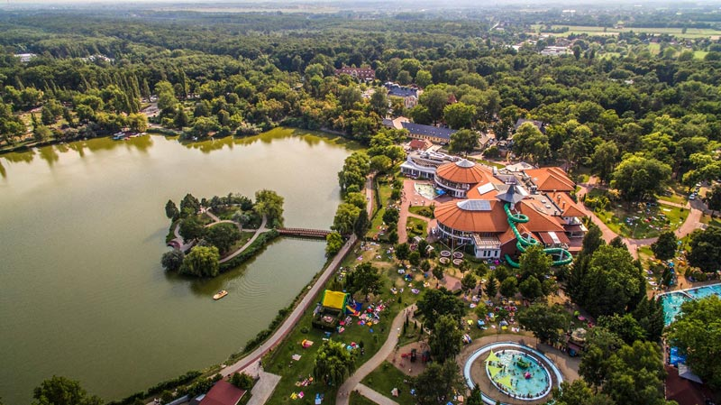
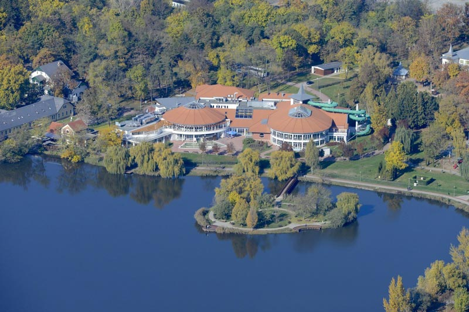
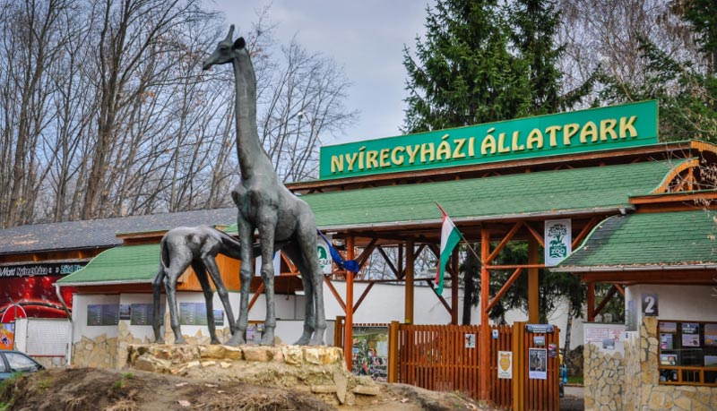
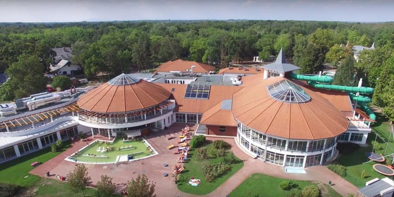
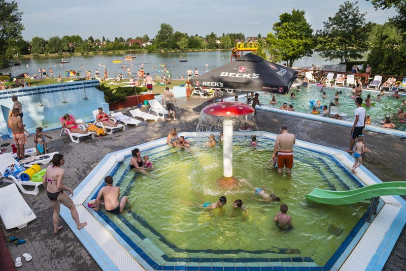
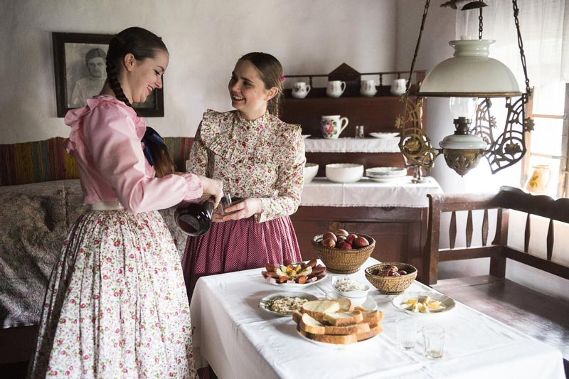
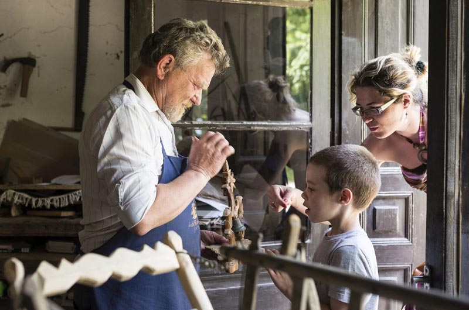
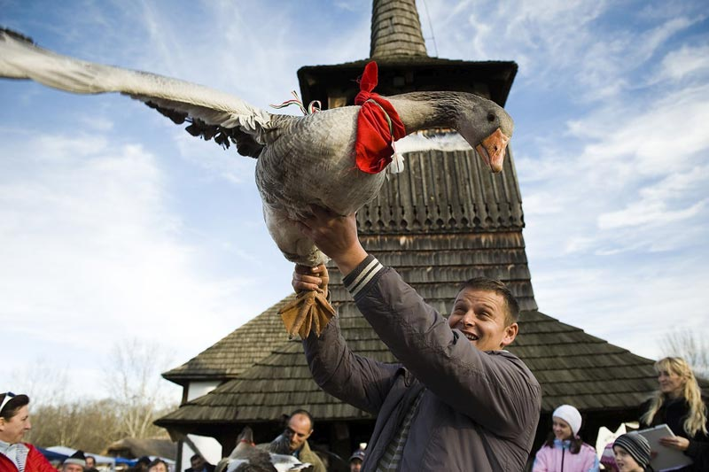
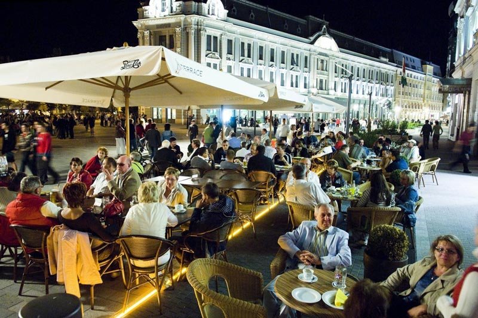
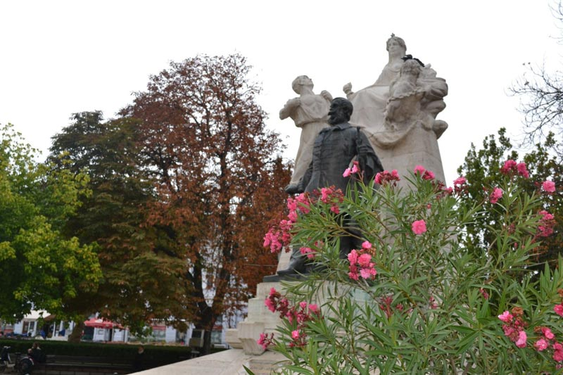

【美景】
尼赖吉哈佐是匈牙利及欧洲重要的经济、教育、文化、商贸、卫生、交通中心，是匈牙利第七大城市。 尼赖吉哈佐动物公园2015年和2018年，赢得了欧洲最佳动物园的称号。 尼赖吉哈佐的水瓶座探险和公园浴场在2017年获得了最高的五星级评级。
【美食】
Goulash牛肉炖汤
Libamáj 鹅肝
Lángos特色油饼
Toltott Kaposzta 圆白菜肉丸
Halászlé 鱼汤
Ujhazi Tyukhuslevesi 家常老鸡汤
Kurtoskalacs 烟囱卷面包
Egri Bikavér埃格尔公牛血葡萄酒
尼赖吉哈佐 尼赖吉哈佐市位于匈牙利的东北部，是索博尔奇•索特马尔州的州府，匈牙利第七大城市，人口12万，是匈牙利及欧洲重要的经济、教育、文化、商贸、卫生、交通中心。尼赖吉哈佐市的支柱产业是基于农业生产的食品加工业，包括罐头厂、烟厂、乳制品厂、肉制品以及粮食加工等。化工业方面，除了两大橡胶厂外，还有几家小型冶金厂。农业方面，10000个小型农场取代了大型的农场，为全市及周边地区提供食品。 尼赖吉哈佐在1209年的文件中被首次提到。1236年该定居点有了第一座教堂。15世纪中期，约400人居住在此。后这座城市被特兰西瓦尼亚吞并，直到1620年。拉科奇独立战争后，镇的人口开始增长，新移民当时在尼赖吉哈扎创办了第一所语法学高中。当时有7500名居民，这是该县人口最多的住所。1837年收到王室特权后城镇开始蓬勃发展，建立了新的市政厅和医院，学校，并开设了水疗中心和餐厅。1858年开始铁路影院，电报局，邮局和金融宫殿的建设。 皇家法院成立于1891年。二战中此地遭到严重破坏。 现在尼赖吉哈佐是重要的文化和教育中心，是继德布勒森之后的北大平原地区第二重要的城市。

景点：盐温泉 盐湖温泉距市中心6公里，位于城市旁边的橡树林边缘，在咸水湖附近，以其药用水而闻名。 湖中可以游泳，划船，脚踏船划船和钓鱼，体育爱好者可以体验他们在创纪录的赛道上奔跑的热情。 这里还有世界上最稀有的动物之家，漫步5,000多种动物中漫步。马蒂亚斯国王时代，就认识到该湖水对人体有益的生理作用，它的名称来源于其钠和盐的高含量。1800年代初期，今天的酒店浴室场址上建造了由四个橡木浴缸组成的浴室，后浴缸被大理石取代。如今可见的古朴建筑是根据伊斯万•帕扎尔在1911年的计划建造的。

景点：尼赖吉哈佐动物园 尼赖吉哈佐动物公园以30英亩的橡树林命名，其中500多种动物，生活在这里的动物大约5000多只。动物园用干沟或沟渠将客人与动物分开。真的感觉好像在浪漫的风景中冒险。这里的稀有动物例如苏门答腊虎，科莫多巨蜥或印度犀牛。动物园的主要景点海洋馆 50万公升鲨鱼玻璃隧道，亚洲丛林与巨大的瀑布，展示南美野生动植物的冒险之旅。2015年和2018年，该动物园在不少于500,000名游客中赢得了欧洲最佳动物园的称号，2017 年被评为年度最佳旅游胜地。“绿色金字塔和水族馆”。

景点：水瓶座冒险和公园浴 1400 m 2的现代化水疗大楼，具有五星级级别的水疗中心，水瓶座探险和公园浴场在2017年获得了最高的五星级评级。据科学家历史学家安德拉什•乔萨称，湖中的水可以治愈“麻疹，湿滑，痛风”。 热水属于溴化碘矿泉水，对缓解脊椎疾病，风湿病，运动和妇科疾病，康复和后治疗非常有用。如果有病史的患者，具有有效的匈牙利健康保险，并且水疗医生在我们其中一家水疗中心的部门开出OEP支持的水疗护理，则无需付费（一年内最多可以使用2种疗法，而OEP 会为此付费）。

景点：索斯托博物馆村 索斯托博物馆村是匈牙利最大的区域性露天博物馆展示了一个从未真正存在过的村庄的复制品。博物馆村飞回几百年前的村庄。可以了解穷人，中农和贵族当时的生活，饮食和习俗。沿着路线可以看到老铁匠铺，理发店，村庄中心的木制教堂，讲斯洛伐克语的定居者在尼赖吉哈佐的生活，了解匈牙利人在阿尔帕家族统治时期的生活！了解当地水果白酒的文化，三种受保护的水果烈酒：扎博尔奇斯的苹果酒，萨图马雷的李子酒和新白湖的樱桃酒！



景点：市中心、科苏特广场、英雄广场
城市居民对市中心的描述：“……不是历史名城。它的名字没有战争或和平条约，没有大量的历史景点，有皇家脚印的古老古迹……”，但它的美丽和氛围吸引着游客。 第一次访问尼赖吉哈佐应在城市的主要广场科苏特广场散步。广场由九个圆形的马赛克组成，是太阳系的象征。最显著的建筑是市政厅。这座具有拱廊入口和文艺复兴时期氛围的折衷建筑，始建于1872年。立面的每一侧都是正义雕像。 广场中间是拉约斯•科苏特纪念碑。雕像的背面可以看到一只大炮桶上有只鸟，而鸟的日期在它们的下方：1848年。在古老的板栗树的阴影下站着永恒纪念柱，左边是广场延续部分的储蓄宫，是折衷主义建筑。建于1912年，其受保护的纪念性建筑被彩绘的彩色玻璃穹顶覆盖。它对面的皇宫酒店建于1895年。这座城市是世纪末也是折衷主义的建筑之一。 酒店旁边是由维吉尔大帝建造的罗马天主教堂。具有大教堂布局的三间教堂中最美丽的部分是巨大的十字军东征。还有一个大理石讲台，上面有四位传福音者。德布勒森-尼赖吉哈佐罗马天主教主教区的主教宫就在此教堂旁边。 沿着兹里永街继续前进，两座美丽的建筑，即新巴洛克式的天主教廉价公寓和前罗马天主教堂区。蒂博尔有三个女孩洗澡的青铜雕像，即喷泉三女神。新艺术风格的宫殿位于街道中间，是该市的婚礼大厅。从春季到秋季，鲜花和装饰性灌木散发着地中海的气息。
 兹里•尼罗那街景点：在博奇凯街的方向上，我们可以看到以帝国风格建筑的县法院大楼，旁边是县检察官办公室。 城市文化生活的中心是自由广场。这里有城市图书馆以及设计形状有趣的文化中心建筑。建筑物后的蓝色建筑是城市美术馆，里面藏有“索斯托奖牌艺术创作殖民地”的永久展览以及定期的美术展览。美术馆旁则是举世闻名的坎特莫斯合唱团演出过现代音乐厅。建筑物的另一部分是帕尔久洛大厅可以在这里观看临时展览。大陆竞技场是享有盛名的体育赛场，也举行博览会和展览会。街区之后的城市部分是布吉托斯遗址，久拉•克鲁迪记录了以前著名的决斗。回到市中心的雕像群，他们是1753年重新安置这座人口稀少城市的主要人物。，扎洛斯靴子大师，费伦茨•卡罗里伯爵,亚诺斯•彼得里科维茨。
